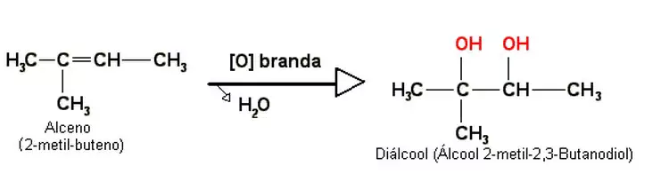

No cotidiano, dependendo da quantidade de soluto e de solvente presente na solução, costumamos dizer que ela é fraca ou forte, indicando a sua saturação. Por exemplo, quando preparamos um suco dissolvendo o pó na água, se colocarmos pouco pó e bebermos, poderemos dizer que o suco está fraco (diluído). Mas se conseguirmos dissolver uma quantidade muito grande de pó na água, diremos que o suco está forte (concentrado).
No entanto, existem determinadas ocasiões em que a quantidade de soluto e de solvente presente na solução deve ser exata, como no caso de injeções intravenosas (como o soro fisiológico) e de soluções usadas em laboratórios e indústrias químicas.
A grandeza que relaciona isso é a concentração. Assim, podemos dar a seguinte definição:
“Concentração de soluções químicas refere-se à quantidade de soluto que existe em uma quantidade padrão de solução ou em uma quantidade padrão de solvente.”
As concentrações das soluções podem ser medidas usando-se diferentes unidades ou relações numéricas, que dependem das grandezas que estão sendo relacionadas. As principais concentrações usadas são as mostradas abaixo. Ao observar as fórmulas matemáticas delas, observe que são usados índices para diferenciar quando se trata do soluto (índice 1), do solvente (índice 2) e da solução (nenhum índice):
Concentração comum ou concentração em massa (C): Relaciona a quantidade de massa do soluto presente em um determinado volume da solução. Sua unidade no SI é gramas por litro (g/L):
C = m1/V
Concentração em quantidade de matéria ou concentração em mol/L (M): É também conhecida por concentração molar e por molaridade. Relaciona a quantidade de matéria (mol) do soluto presente em um determinado volume da solução. Sua unidade no SI é mol por litro (mol/L):
M = n1 / V ou M =m1 / M1 . V
Densidade (d): Relaciona a quantidade de massa da solução (massa do solvente + massa do soluto) e o volume dessa solução. Sua unidade no SI é gramas por litro (g/mL):
d = m / V ou d = m1 + m2 / V
Título ou porcentagem em massa (τ): Relaciona a massa do soluto e a massa da solução. Não possui unidade ou fala-se em termos de porcentagem:
τ = m1 / m ou τ = m1 / m1 + m2
Quando queremos indicar a porcentagem em massa, basta multiplicar o resultado obtido por 100%.
Um exemplo é o soro fisiológico mostrado abaixo, que é uma solução de água destilada com NaCl. Assim, quando vemos em seus rótulos a porcentagem em massa igual a 0,9%, isso significa que 100g da solução contêm 0,9 grama de NaCl. Dessa forma, podemos concluir que seu título é igual a 0,009.
Existe também o título em volume que relaciona o volume do soluto e o volume da solução:
τv= V1 / V
Partes por milhão (ppm): Indica quantas partes de soluto (em massa ou em volume) existem em um milhão (1 000 000 ou 106) de partes da solução (também em massa ou em volume).
1 ppm = 1 parte do soluto / 106 partes de solução
Molalidade (W): relaciona a quantidade de matéria de um soluto (mols) pela massa em quilogramas do solvente:
W = n1 / m2
Estequiometria
A estequiometria é a forma de calcular as quantidades de reagentes e produtos envolvidos em uma reação química.
Ela compreende cálculos matemáticos simples para conhecer a proporção correta de substâncias a serem usadas.
Os princípios da estequiometria se baseiam nas Leis Ponderais, relacionadas com as massas dos elementos químicos dentro das reações químicas. Elas incluem:
⚈Lei de Lavoisier: Também chamada de “Lei de Conservação das Massas”. Baseia-se no seguinte princípio: "A soma das massas das substâncias reagentes em um recipiente fechado é igual à soma das massas dos produtos da reação".
⚈Lei de Proust: Também chamada de “Lei das Proporções Constantes”. Ela baseia-se em “Uma determinada substância composta é formada por substâncias mais simples, unidas sempre na mesma proporção em massa”.
Assim, átomos não são criados ou destruídos em uma reação química. Logo, a quantidade de átomos de determinado elemento químico deve ser a mesma nos reagentes e nos produtos.
Como fazer cálculos estequiométricos?
Existem várias formas de se resolver problemas com cálculos estequiométricos. Vamos seguir alguns passos para a sua resolução:
⚈Passo 1: Escreva a equação química com as substâncias envolvidas;
⚈Passo 2: Faça o balanceamento da equação química. Para isso, é preciso ajustar os coeficientes para que reagentes e produtos contenham a mesma quantidade de átomos, segundo as Leis Ponderais (Lei de Proust e Lei de Lavoisier);
⚈Passo 3: Escreva os valores das substâncias, seguindo os dados do problema e identificando o que se pede;
⚈Passo 4: Estabeleça a relação existente entre os números de moles, massa, volume. De acordo com os valores a seguir:
⚈Passo 5: Faça uma regra de três simples para calcular os valores que são pedidos na questão ou problema.
1.) Quantos moles do gás hidrogênio são necessários para a formação de amônia (NH3), sabendo que a quantidade do gás nitrogênio é de 4 moles?
Passo 1: N2 + H2 = NH3
Passo 2: na equação as quantidades de átomos não estão equilibradas. Há 2 átomos de nitrogênio e 2 de hidrogênio nos reagentes, enquanto que no produto há 1 átomo de N e 3 de hidrogênio.
Começando pelo nitrogênio, acertamos o coeficiente no produto: N2 + H2 = 2 NH3
O nitrogênio ficou equilibrado nos dois lados, mas o hidrogênio não.
N2 + 3 H2 = 2NH3. Agora sim!
Passo 3: Valor dado pelo exercício: 4 moles de N2
Valor pedido pelo exercício: quantos moles de H2? Escrevemos: x moles de H2
Passo 4: Estabelecer as relações correspondentes quando necessário. Nesse exemplo não há necessidade, porque é de mol com mol.
Na reação equilibrada acima, observa-se que a relação é de 1 mol de N2 que reage com 3 moles de H2.
Passo 5: Fazer a regra de três.
ATENÇÃO! Coloque sempre os valores de uma substância sobre ela mesma ao montar a regra de três, quer dizer, no exemplo, nitrogênio sobre nitrogênio e hidrogênio sobre hidrogênio, como se vê abaixo:
pH e pOH
O pH e o pOH são amplamente estudados pela Química e, portanto, serão exigidos na prova de Ciências da Natureza. Eles estão ligados com a ocorrência da autoionização da água, isto é, a água produz espontaneamente baixíssimas concentrações de hidrônios (H3O+) e hidroxilas (OH-), sendo o produto dessas concentrações ([H3O+].[OH-]) sempre uma constante (constante de ionização da água ou Kw).
Pelo fato de uma solução aquosa sempre apresentar os íons hidrônio e hidróxido, as siglas pH e pOH podem ser utilizadas isoladamente ou em conjunto, mas sempre indicam o caráter ácido, básico ou neutro de uma solução.
1a Dica: Significado de pH e pOH
⚈pH é a sigla utilizada para indicar a concentração em mol/L de cátions hidrônio (H3O+) em uma solução.
⚈pOH é a sigla utilizada para indicar a concentração em mol/L de ânions hidróxido (OH-) em uma solução.
2a Dica: Fórmula geral para cálculos envolvendo pH e pOH.
⚈pH + pOH = 14.
⚈A expressão geral para cálculo de pH e pOH está relacionada com as concentrações de cátions hidrônio e ânions hidroxila provenientes da autoionização da água a 25oC. Essas concentrações apresentam o mesmo valor (10-7 mol/L), logo, o produto iônico ([H3O+].[OH-]) delas será 10-14.
3a Dica: Interpretação do valor do pH
⚈pH > 7: indica que a concentração de cátions hidrônio é menor que a concentração de ânions hidróxido na solução, por isso, a solução é considerada básica;
⚈pH = 7: indica que a concentração de cátions hidrônio e a de ânions hidróxido na solução são iguais, por isso, a solução é considerada neutra;
⚈pH < 7: indica que a concentração de cátions hidrônio é maior que a concentração de ânions hidróxido na solução, por isso, a solução é considerada ácida.
4a Dica: Como calcular o pH
Para calcular o pH de uma solução, podemos utilizar duas expressões, que utilizam obrigatoriamente a concentração de cátions hidrônio (H3O+):
pH = -log [H3O+]
ou
10-pH = [H3O+]
5a Dica: Como calcular o pOH
Para calcular o pOH de uma solução, podemos utilizar duas expressões, que utilizam obrigatoriamente a concentração de ânions hidróxido (OH-):
pOH = -log [OH-]
ou
10-pOH = [OH-]
6a Dica: Determinação da concentração de hidrônios ou hidróxidos pela lei da diluição de Ostwald
Caso o exercício não forneça as concentrações de hidrônios ou hidróxidos para calcular o pH e o pOH, podemos determiná-las na expressão da diluição de Ostwald, desde que tenhamos a constante de ionização (Ki) e a molaridade (M) do soluto na solução.
Ki = α2. M
Após encontrar o valor do grau de ionização (α), basta multiplicar a molaridade fornecida por ele:
[H3O+] = M. α
ou
[OH-] = M. α
OBS.: Caso o ácido tenha mais de um H3O+ ou a base tenha mais de um grupo OH-, devemos multiplicar essa quantidade nas expressões acima para determinar as concentrações ([H3O+] ou [OH-]).
Cadeias Carbônicas
São ligações constituídas apenas por átomos de carbono e hidrogênio
As cadeias carbônicas são constituídas pelas ligações entre os átomos de carbono e hidrogênio, também chamados de hidrocarbonetos. Estruturas de estudo da química orgânica, essas cadeias são complexas também podem incluir outros elementos químicos, formando uma infinidade de compostos orgânicos.
Os átomos de carbono são considerados tetravalentes, ou seja, podem realizar até quatro ligações covalentes, classificadas como simples, duplas e triplas. Entretanto, este tipo de ligação não é exclusiva dos carbonos, elas também podem ocorrer com átomos de outros elementos.
Em virtude dessa característica peculiar, o elemento carbono possui uma capacidade diferenciada de realizar ligações encadeadas, chamadas de cadeias de carbono, que podem ser curtas ou longas. Essas estruturas, ligadas entre si, ou entre heteroátomos (O, N, S, P), formam a estrutura básica de diversas moléculas orgânicas, além de serem a base de muitos compostos fundamentais para a vida encontrada na natureza.
Por ser considerado um elemento com enorme facilidade de dar origem a novos compostos, suas cadeias são classificadas de modo que facilite a identificação e os estudos sobre os aspectos das estruturas carbônicas.
Classificações das cadeias carbônicas:
-A classificação dessas cadeias ocorre por meio de alguns critérios utilizados para facilitar os estudos da química orgânica, principalmente critérios referentes às suas funções.
-Estão listados a seguir a classificação das moléculas carbônicas, de acordo com a disposição dos átomos de carbono, sendo consideradas abertas, fechadas ou mistas.
Cadeias alifáticas, acíclicas ou abertas
Um tipo de cadeia aberta, também denominada como acíclica ou alifática, possui átomos de carbonos que se ligam e mantêm as suas extremidades livres.
Esse tipo de estrutura não forma ciclos fechados.
Cadeia normal
As cadeias chamadas de normais, ou também retas e lineares, são aquelas que apresentam como característica principal a ausência de ramificações. Elas também se diferem por apresentar em sua estrutura apenas carbonos primários ou secundários, possuindo apenas duas extremidades.
As estruturas a seguir são exemplos de cadeias normais:
H3C – CH2 – CH2 – CH3
H3C – CH2 – CH = CH – CH3
Cadeia ramificada
São classificadas como cadeias ramificadas aquelas que possuem mais de duas extremidades, tendo a presença de, no mínimo, um carbono terciário ou quaternário.
Cadeia homogênea
As cadeias abertas homogêneas recebem esse nome por possuírem apenas átomos de carbono e nenhum outro elemento. Logo, não apresentam heteroátomos. Esses compostos são constituídos apenas por moléculas de carbono ou de hidrogênio.
Cadeia heterogênea
As cadeias abertas e heterogêneas, ao contrário da anterior, apresentam, pelo menos, um heteroátomo, ou seja, um átomo diferente de carbono ou hidrogênio ao longo de sua estrutura, como ocorre na molécula estrutural apresentada abaixo:
H3C – CH2 – O – CH3
Cadeia saturada
As cadeias abertas e saturadas são aquelas que apresentam átomos de carbono interagindo entre si por meio de uma ligação simples. Nela, fica posicionado o carbono saturado. Como mostrado a seguir:
H3C – CH2 – CH2 – CH2 – CH3
Cadeia insaturada
Nas cadeias abertas e insaturadas ocorre, obrigatoriamente, a ligação de dois átomos de carbono por meio de ligação dupla ou tripla. Nessa interação, o carbono é chamado de insaturado.
H2C = CH2
Cadeias cíclicas ou fechadas
As cadeias cíclicas, como sugere o próprio nome, fazem conexões entre si, formando um ciclo, podendo ser reclassificadas como aromáticas ou alicíclicas. No caso das alicíclicas, ainda, podem ser subdivididas em homocíclicas, heterocíclicas saturadas ou insaturadas, de acordo com a estrutura criada.
Cadeia aromática
Uma característica particular da cadeia aromática é que ela se subdivide em mais duas, são elas:
Mononucleares- elas ocorrem quando há apenas um anel aromático. Exemplo: benzeno Polinucleares- ao contrário da mononuclear, ocorre a presença de mais de um anel aromático. Exemplo: naftaleno.
A molécula de benzeno é um exemplo de cadeia com apenas um anel aromático.
Cadeia alicíclica
As cadeias fechadas alicíclicas não possuem nenhum tipo de anel aromático, subdividindo-se em saturadas e insaturadas. Além disso, as cadeias insaturadas ainda apresentam mais uma subdivisão. São elas:
Cadeia homogênea- nesse caso os anéis das cadeias possuem somente átomos de carbono.
Cadeia heterogênea- classifica-se como heterogênea as cadeias que apresentam átomos além das moléculas de carbono e hidrogênio.
Cadeia saturada
As cadeias fechadas saturadas são aquelas em que os átomos realizam ligações simples entre si.
Cadeia insaturada
Nos casos das cadeias fechadas insaturadas, diferente das saturadas, podem acontecer ligações duplas entre os átomos.
IMPORTANTE! As cadeias mistas apresentam carbonos que fazem interações entre si, além de apresentarem um ciclo na cadeia, como ocorre com o benzeno, citado acima.
Classificação dos carbonos
Os carbonos são classificados de acordo com a posição que ocupam dentro da cadeia.
⚈Carbono primário: os carbonos primários se localizam nas extremidades das cadeias, fazendo ligação com um átomo qualquer.
⚈Carbono secundário: esses fazem ligações duplas com outros dois átomos de carbono pertencentes a mesma cadeia.
⚈Carbono terciário:ong> na cadeia, esses fazem ligações com outros três átomos também de carbono.
⚈Carbono quaternário: seguindo a mesma ordem de classificação, esses fazem ligações com outros átomos somente de carbono na mesma cadeia.
Radioatividade
Radioatividade é a propriedade que alguns átomos, como urânio e rádio, possuem de emitirem espontaneamente energia na forma de partículas e onda, tornando-se elementos químicos mais estáveis e mais leves.
A radioatividade apresenta-se com duas formas diferentes de radiações: partícula — alfa (α) e beta (β); e onda eletromagnética — raios gama (γ).
-Raios alfa: são partículas positivas constituídas por dois prótons e dois nêutrons e com baixo poder penetração.
-Raios beta: são partículas negativas que não contêm massa constituídas por um elétron (massa desprezível), e seu poder de penetração é superior ao dos raios alfa, porém inferior ao dos raios gama.
-Raios gama: são ondas eletromagnéticas de alta energia e, por não serem partículas, também não possuem massa.
Leis
A emissão radioativa de partículas segue determinados comportamentos que são explicados pelas leis da radioatividade (uma para a partícula alfa e outra para a partícula beta), que foram descritas pelo químico inglês Frederick Soddy e pelo químico e físico polonês Kazimierz Fajans.
-Primeira lei da radioatividade
Segundo essa lei, quando um átomo radioativo emite uma radiação do tipo alfa, ele dará origem a um novo átomo com núcleo contendo dois prótons e dois nêutrons a menos, totalizando uma massa quatro unidades menor. Podemos representar a primeira lei da radioatividade com a seguinte equação genérica:
Note que, ao emitir uma radiação alfa, o novo átomo formado, Urânio-235, possui número de massa quatro unidades menor e o número atômico duas unidades menor — exatamente os valores correspondentes à partícula α emitida pelo núcleo do plutônio. Para saber mais sobre, acesse: Primeira lei da Radioatividade ou Primeira Lei de Soddy.
-Segunda lei da radioatividade
A segunda lei fala sobre a emissão beta. Quando um átomo emite uma partícula beta, constituída por um elétron e de massa desconsiderada, sua massa atômica permanece inalterada e seu número atômico aumenta uma unidade. Genericamente, representamos da seguinte forma:
Pode-se perceber que o átomo de nitrogênio formado possui a mesma massa do átomo de C-14, ou seja, são isóbaros, e seu número atômico aumenta em uma unidade. O aumento do número atômico foi explicado pelo cientista Henrico Fermi, que propôs que um dos nêutrons do núcleo sofre uma transmutação, segundo a equação seguinte, gerando um elétron (a partícula beta emitida), um neutrino (uma partícula subatômica sem carga elétrica e sem massa, ) e um próton (p).
Equação representativa da transmutação do nêutron, segundo a hipótese de Fermi.
O elétron e o neutrino são emitidos para fora do núcleo, permanecendo apenas o próton, o que explica o aumento do número atômico Para saber mais sobre, acesse: Segunda lei da Radioatividade ou Segunda Lei de Soddy.
Aplicações
Apesar da visão negativa que depositam sobre a radioatividade, ela tem aplicações importantes no nosso cotidiano, por exemplo, na produção de energia elétrica em usinas nucleares por meio da fissão de átomos radioativos.
Atualmente, o Brasil não utiliza a energia nuclear como sua principal fonte de energia, mas possui usinas nucleares (Angra 1 e 2) trabalhando no fornecimento de energia elétrica para o país. Podemos citar também a datação de materiais encontrados por arqueólogos utilizando carbono-14.
Outro papel fundamental que a radioatividade possui está relacionado com a área da medicina, como nos exames de raios-X e nas tomografias, e também em alguns tipos de tratamento de câncer.
Radioatividade natural
Diariamente, estamos expostos a pequenas quantidades de radiação, sejam artificiais, sejam naturais. A radioatividade natural dá-se de maneira espontânea na natureza. Parte dessa radiação que recebemos vem dos alimentos consumidos no dia a dia, como o Radônio-226 e o Potássio-40, que se apresentam em níveis muito baixos e não atribuem riscos a nossa saúde e nem prejudicam os valores nutricionais dos alimentos.
Esse processo de expor os alimentos a emissões radioativas tem o objetivo de conservar os alimentos e promover um crescimento das plantas. Alguns exemplos de alimentos que emitem radiação são: castanha-do-pará, banana, feijão, carne vermelha, entre outros.
Descoberta
O estudo da radioatividade teve início com pesquisas do físico alemão Wilhelm Röentgen, em 1895, quando esse investigava o efeito da luminescência. Outro cientista importante para o desenvolvimento da radioatividade foi o físico francês Antoine-Henri Becquerel, que percebeu, em 1896, marcações feitas em um filme fotográfico por uma amostra de sal de urânio.
No entanto, foi o casal Curie que utilizou o termo radioatividade pela primeira vez. Em 1898, a polonesa Marie Curie deu seguimento aos estudos relativos à radioatividade e fez descobertas valiosas para a área, como a descoberta de dois novos elementos radioativos: o polônio (Po) e o rádio (Ra).
Posteriormente, Ernest Rutherford descobriu as radiações do tipo alfa (α) e beta (β), o que permitiu melhores explicações para seu modelo atômico, bem como o avanço das pesquisas relacionadas à radioatividade.
Decaimento
O decaimento radioativo (ou transmutação) é o processo natural em que um núcleo instável emite radiação, de forma sucessiva, a fim de diminuir sua energia e tornar-se estável.
Isso ocorre normalmente com átomos de números atômicos maiores que 84, que são átomos com alta instabilidade nuclear devido à quantidade de carga positiva (prótons) acumulada no núcleo. Nesse processo, os nêutrons não são suficientes para estabilizar todos os prótons aglomerados no núcleo, e, então, o núcleo começa a sofrer o decaimento radioativo até que seu número atômico seja menor que 84.
Em alguns casos, pode acontecer que átomos com número atômico inferior a 84 tenham núcleos instáveis e também passem pelo processo de decaimento, mas, para isso, precisam ter um número de prótons bem superior ao número de nêutrons.
O decaimento radioativo é calculado pelo tempo de meia-vida (ou período de semi-desintegração, P) do radioisótopo, que é o tempo necessário para que metade da massa da amostra inicial radioativa sofra desintegração, ou seja, torne-se estável. Graficamente falando, a seguir, está representado o conceito de meia-vida. Por se tratar de um processo contínuo, a curva tende a chegar a zero.
Gráfico representando o tempo de meia-vida
Os cálculos envolvendo decaimento radioativo seguem as seguintes fórmulas:
⚈Fórmula para cálculo da massa restante após o tempo de meia-vida:
mf – massa final
mo – massa inicial
x – quantidade de meias-vidas decorridas
Fórmula para o cálculo do tempo de desintegração de uma amostra radioativa:
t – tempo de desintegração
P – período de meia-vida
x – quantidade de meias-vidas decorridas
Elementos radioativos
Existem dois tipos de elementos radioativos: os naturais e os artificiais. Os naturais possuem elementos encontrados na natureza, já com seus núcleos instáveis, como o urânio, o actínio e o rádio. Já os artificiais são produzidos por processos que desestabilizam o núcleo de um átomo. Nesse caso, podemos citar o astato e o frâncio.
Os principais elementos radioativos são: urânio-235, cobalto-60, estrôncio-90, rádio-224 e iodo-131. Devido a sua larga utilização em usinas nucleares e tratamentos de câncer, esses elementos tendem a aparecer com maior frequência no nosso cotidiano. Para saber mais sobre esse assunto, acesse: Elementos radioativos.
Lixo radioativo
O lixo radioativo ou lixo nuclear é o resíduo das indústrias que utilizam material radioativo em seus processos que não possuem mais aplicação prática. Esse lixo é oriundo, principalmente, das usinas nucleares e de aplicações médicas.
A grande produção de lixo radioativo tem sido um problema ambiental para todo o mundo, devido às escassas e inadequadas condições de descarte e armazenamento.
Esses rejeitos estão associados à contaminação do solo, dos cursos de água e do ar, resultando na destruição do meio ambiente de forma gradual. Além disso, também causam riscos à saúde humana, como infecções, câncer e, em casos mais severos de contaminação, podem levar à morte.
Soluções
As soluções químicas são misturas homogêneas formadas por duas ou mais substâncias.
Os componentes de uma solução são denominados de soluto e solvente:
⚈Soluto: representa a substância dissolvida.
⚈Solvente: é a substância que dissolve.
Geralmente, o soluto de uma solução está presente em menor quantidade que o solvente.
Um exemplo de solução é a mistura de água e açúcar, tendo a água como solvente e o açúcar como soluto.
A água é considerada o solvente universal, devido ao fato de dissolver uma grande quantidade de substâncias.
Classificação das soluções:
Formação de soluções
Porém, esses dois componentes podem apresentar diferentes quantidades e características. Como resultado, existem diversos tipos de soluções e cada uma delas baseia-se em uma determinada condiçã
Quantidade de soluto
De acordo com a quantidade de soluto que possuem, as soluções químicas podem ser:
⚈Soluções saturadas:solução com a quantidade máxima de soluto totalmente dissolvido pelo solvente. Se mais soluto for acrescentado, o excesso acumula-se formando um corpo de fundo. ⚈Soluções insaturadas: também chamada de não saturada, esse tipo de solução contém menor quantidade de soluto. ⚈Soluções supersaturadas: são soluções instáveis, nas quais a quantidade de soluto excede a capacidade de solubilidade do solvente.
Estado físico
As soluções também podem ser classificadas de acordo com o seu estado físico:
Soluções sólidas: formadas por solutos e solventes em estado sólido. Por exemplo, a união de cobre e níquel, que forma uma liga metálica. Soluções líquidas: formadas por solventes em estado líquido e solutos que podem estar em estado sólido, líquido ou gasoso.
Por exemplo, o sal dissolvido em água. Soluções gasosas: formadas por solutos e solventes em estado gasoso. Por exemplo, o ar atmosférico.
Natureza do soluto
Além disso, segundo a natureza do soluto, as soluções químicas são classificadas em:
Soluções moleculares: quando as partículas dispersas na solução são moléculas, por exemplo, o açúcar (molécula C12H22O11).
Soluções iônicas: quando as partículas dispersas na solução são íons, por exemplo, o sal comum cloreto de sódio (NaCl), formado pelos íons Na+ e Cl-.
Coeficiente de solubilidade
Solubilidade é a propriedade física das substâncias de se dissolverem, ou não, em um determinado solvente.
O coeficiente de solubilidade representa a capacidade máxima do soluto de se dissolver em uma determinada quantidade de solvente. Isso conforme as condições de temperatura e pressão.
Conforme a solubilidade, as soluções podem ser:
⚈Soluções diluídas: a quantidade de soluto é menor em relação ao solvente.
⚈Soluções concentradas: a quantidade de soluto é maior que a de solvente.
Quando temos uma solução concentrada, podemos notar que o soluto não se dissolve completamente no solvente, o que leva a presença de um corpo de fundo.
Para calcular o coeficiente de solubilidade é utilizada a seguinte fórmula:
Onde:
Cs: coeficiente de solubilidade
m1: massa do soluto
m2: massa do solvente
Concentração das soluções
O conceito de concentração (C) está intimamente relacionado com a quantidade de soluto e de solvente presente em uma solução química.
Sendo assim, a concentração da solução indica a quantidade, em gramas, de soluto existente em um litro de solução.
Para se calcular a concentração utiliza-se a seguinte fórmula:
reto C espaço igual a espaço reto m sobre reto V
Onde:
C: concentração m: massa do soluto V: volume da solução
No Sistema Internacional (SI), a concentração é dada em gramas por litro (g/L), a massa em gramas (g) e o volume em litros (L)
.
Diluição das soluções
A diluição de soluções corresponde à adição mais solvente em uma solução.
Como resultado, passamos de uma solução mais concentrada para uma solução mais diluída.
Diluição de solução
Diferença entre solução concentrada e solução diluída
É importante ressaltar que a mudança ocorre no volume da solução e não na massa do soluto. Podemos concluir então que quando há o aumento do volume, a concentração diminui. Em outras palavras, o volume e a concentração de uma solução são inversamente proporcionais.
Oxidações
Reação química com perda de elétrons
Oxidação é um processo químico desencadeado pela reação entre um composto orgânico e um agente oxidante. Os compostos são substâncias encontradas em organismos vivos e, geralmente, têm carbono na sua composição. O agente é o que ganha elétrons e sofre redução, ocasionando o que chama-se de oxidação.
A oxidação também é chamada de “oxirredução” (redox) porque as suas reações ocorrem simultaneamente com a transferência de elétrons. Tem essa nomenclatura pois no início acreditava-se que o oxigênio era o agente responsável por essa reação química. Contudo, após anos de pesquisas observou-se que pode haver oxidação sem a presença do oxigênio.
• Oxidação = perda de elétrons = Nox aumenta; redução = ganho de elétrons = Nox diminui.
• A camada de valência determina a quantidade de elétrons que um átomo necessita ganhar ou perder para obter estabilidade. No Nox, a quantidade é igual à valência do
Oxidação orgânica
Uma oxidação é acompanhada por outra reação. No cotidiano este processo pode ser percebido no escurecimento de um fruto, na corrosão de metais, nas pilhas e etc. Na fórmula química é simbolizada por [O] e materializa-se em permanganato de potássio (KMnO4), dicromato de potássio (K2Cr2O7) ou o tetraóxido de ósmio (OsO4). Existem diversos tipos de reações de oxidação, sendo as mais importantes:
Oxidação branda: ocorre com os hidrocarbonetos insaturados quando o agente oxidante é um composto de permanganato de potássio (KMnO4). Eles são classificados em alcenos ou alcinos.
Nos alcenos têm-se a decomposição do permanganato e a produção do oxigênio, que com a dupla ligação do alceno forma um epóxido, que através da hidrólise transforma-se em dois grupos OH em carbonos vizinhos. Com esta reação pode-se obter outras a depender do tipo da posição da ligação dupla.
Já os alcinos contribuem para a formação das dicetonas. Assim, quando houver dois hidrogênios ligados em cada carbono participante da ligação tripla, com exceção do etino (HC=CH), um aldeído será formado.
 Equação da oxidação branda do alceno.
Oxidação energética: podem romper a ligação dupla dos alcenos. Nesta reação, o permanganato de potássio encontra-se em meio quente e ácido, tornando a reação mais energética.
A depender da estrutura do alceno, podem ser formados cetonas e ácidos carboxílicos. Se o carbono estiver ligado a apenas um outro carbono, resultará no ácido carbônico (H2CO3), que se decompõe em gás carbônico (CO2) e água (H2O).
Equação da oxidação energética do alceno.
Oxidação dos álcoois primários: oxidam-se em energéticos como o permanganato de potássio e dicromato de potássio em meio sulfúrico. Resulta no aldeído e, se houver grande quantidade de agente oxidante, em ácido carboxílico.
Oxidação ozonólise: ocorre com os alcenos quando o agente oxidante é o gás ozônio [O3(g)] na presença de água [H2O] e zinco [Zn(s)]. Sua reação forma os aldeídos e/ou as cetonas e água oxigenada [H2O2].
Equação da oxidação ozonólise
Doença do tétano
O conhecimento popular diz que objetos enferrujados são portas de entrada para uma doença infecciosa chamada tétano. No entanto, não é bem assim. De fato, objetos enferrujados podem transmitir a doença, mas não pelo fato de estarem oxidados.
O tétano é causado pela toxina da bactéria Clostridium tetani, que penetra no organismo através de ferimentos na pele. Depois, a toxina age sobre o sistema nervoso central provocando contraturas musculares (espasmos).
A bactéria causadora do tétano é encontrada no solo, na poeira e nas fezes de animais. Como os objetos enferrujados geralmente estão em contato com sujeiras, têm grande chance de estarem contaminados. Por isso, associa-se a doença à ferrugem.
Essa bactéria se reproduz em ambientes sem oxigênio, como é o caso dos ferimentos na pele. Já a oxidação do metal ou ferro propicia um lugar favorável para que a bactéria se esconda e desenvolva. Contudo, ela só é perigosa quando há contato direto com ferimentos.
A maneira de se prevenir desta doença é tomando vacina. Devem ser tomadas pelo menos três vacinas: tríplice, vacina dupla e uma dose de reforço a cada 10 anos. Caso a doença seja transmitida para o organismo, é necessário fazer o tratamento com antibióticos, relaxantes musculares e imunoglobulinas.
Eletroquímica
A Eletroquímica é um ramo da Química que estuda o fenômeno da transferência de elétrons para a transformação de energia química em energia elétrica e vice-versa.
As reações que envolvem transferência de elétrons são chamadas de reações de oxirredução, pois nelas ocorrem simultaneamente a redução e a oxidação.
Por exemplo, a seguir há uma reação desse tipo, na qual uma placa de zinco metálico (Zn0) é colocada em uma solução de sulfato de cobre (que possui cátions cobre II (Cu2+) dissolvidos). O zinco sofre oxidação, perdendo dois elétrons e transformando-se no cátion zinco (Zn2+), enquanto os íons cobre recebem esses elétrons e transformam-se em cobre metálico (Cu0). Veja a equação iônica desse processo:
Zn(s) + Cu2+(aq) → Zn2+(aq) + Cu(s)
Assim, nos fenômenos eletroquímicos, sempre ocorrem reações semelhantes a essa. Porém, isso pode ocorrer de duas formas. Os dois campos de estudo principais da Eletroquímica são:
Pilhas e baterias: Nesse caso existe a conversão de energia química em energia elétrica, ou seja, usam-se as reações químicas de oxirredução espontâneas para a geração de eletricidade.
Dentro das pilhas são colocadas certas substâncias químicas que reagem espontaneamente transferindo elétrons, isto é, por meio de reações de oxirredução. As pilhas possuem dois eletrodos, que são:
- ânodo: polo negativo onde ocorre a oxidação; - cátodo: polo positivo onde ocorre a redução.
As pilhas e baterias também possuem um eletrólito, que é uma solução condutora de íons. Assim, forma-se um fluxo de elétrons entre esses polos que resulta na formação de uma corrente elétrica que pode ser utilizada para que diversos aparelhos elétricos funcionem.
A diferença entre as pilhas e as baterias é que enquanto as pilhas possuem somente dois eletrodos, as baterias são formadas por várias pilhas conectadas em série ou em paralelo, ou seja, possuem vários eletrodos, o que aumenta a sua voltagem.
Eletrólise: É o processo inverso que ocorre nas pilhas e baterias, ou seja, ocorre a transformação de energia elétrica em energia química. Utiliza-se energia elétrica para forçar a ocorrência de uma reação química não espontânea pela neutralização das cargas dos íons e formação de substâncias simples.
-Isso ocorre quando se passa uma corrente elétrica proveniente de algum gerador (como uma pilha ou uma bateria) por um líquido iônico (substância fundida - eletrólise ígnea) ou por uma solução aquosa que contém íons (eletrólise em meio aquoso). Desse modo, o cátion presente no líquido ou na solução recebe elétrons, e o ânion doa elétrons, para que ambos fiquem com carga elétrica igual a zero e com energia química acumulada.
A eletrólise é usada para a produção de substâncias simples de uso importante que não são encontradas na natureza, como o gás cloro e o sódio metálico produzidos na eletrólise ígnea do cloreto de sódio. Na eletrólise aquosa do cloreto de sódio, além de o cloro ser produzido, também se obtém o gás hidrogênio que é usado como combustível. Mais detalhes sobre como ocorrem esses processos podem ser vistos no texto Eletrólise do cloreto de sódio.
A eletrólise também é usada para a produção de metais, como mostra o artigo Produção de alumínio por eletrólise, e para o desenvolvimento de processos de proteção de metais contra a corrosão.
A Eletroquímica é, portanto, um ramo muito importante não só porque está relacionada com o desenvolvimento tecnológico e de métodos de produção de eletricidade, mas também porque permite inclusive a monitoração das atividades do cérebro e do coração, do pH do sangue, da presença de contaminantes na água, além de possibilitar a criação de equipamentos que salvam vidas, como o marcapasso, e assim por diante.